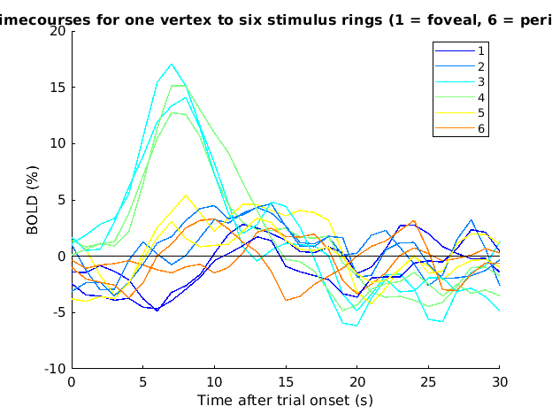
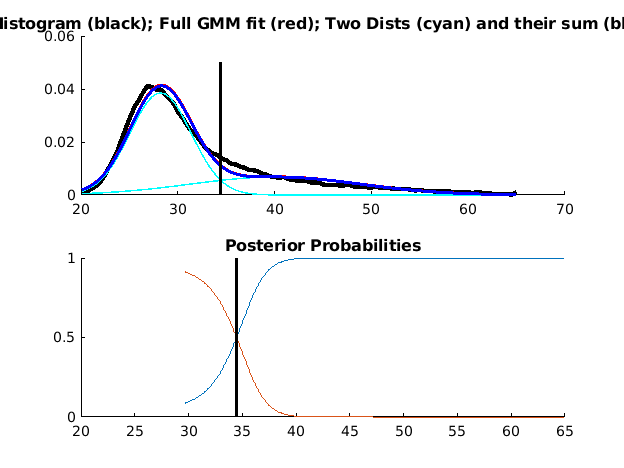

Example 1: Apply TDM on an example dataset
Contents
- Download dataset (if necessary) and add TDM to the MATLAB path
- Load in the data
- Inspect the data
- Fit Standard GLM
- Fit FIR model
- Inspect FIR timecourses for one vertex
- Determine an R2 threshold for the FIR results
- Extract FIR timecourses
- Perform TDM
- Inspect TDM figure outputs
- Fit TDM GLM
- Inspect maps
- Alternative ICA-based procedure
Download dataset (if necessary) and add TDM to the MATLAB path
setup;
Load in the data
% Load in the data load('exampledataset.mat'); % Check the workspace whos
Name Size Bytes Class Attributes bc 121695x1 973560 double data 1x4 716540608 cell design 1x4 5280 cell extrapmask 1185x859 1017915 logical imglookup 1185x859 4071660 uint32 stimdur 1x1 8 double tr 1x1 8 double
Inspect the data
% Check dimensionality of the data
data
data =
1x4 cell array
Columns 1 through 3
{121695x368 single} {121695x368 single} {121695x368 single}
Column 4
{121695x368 single}
% Check dimensionality of the design matrices
design
design =
1x4 cell array
{368x6 double} {368x6 double} {368x6 double} {368x6 double}
% Check stimulus duration
stimdur
stimdur =
3.5
% Check TR
tr
tr =
1
Fit Standard GLM
% Here, we quickly fit a vanilla ("Standard") GLM that uses a single canonical HRF. % Define options (no bootstrapping, no denoising (in order to speed things up)) opt = struct('numboots',0,'numpcstotry',0); % to use denoising, could set numpcstotry to 20 % Use GLMdenoisedata.m to fit a GLM that incorporates a single canonical HRF. % We use 6 condition-splits (so we get 6 distinct betas for each condition). % Note that randomization is used within condition_split.m so results may % be different each time it is run. resultsST = GLMdenoisedata(condition_split(design,6),data,stimdur,tr,'assume',[],opt, ... 'GLMdenoise_ST_figures');
*** GLMdenoisedata: generating sanity-check figures. *** *** GLMdenoisedata: performing cross-validation to determine R^2 values. *** cross-validating model....done. computing model fits...done. computing R^2...done. computing SNR...done. *** GLMdenoisedata: determining noise pool. *** *** GLMdenoisedata: calculating noise regressors. *** *** GLMdenoisedata: selected number of PCs is 0. *** *** GLMdenoisedata: fitting final model (no denoising, for comparison purposes). *** fitting model...done. preparing output...done. computing model fits...done. computing R^2...done. computing SNR...done. *** GLMdenoisedata: fitting final model (with denoising). *** fitting model...done. preparing output...done. computing model fits...done. computing R^2...done. computing SNR...done. *** GLMdenoisedata: calculating denoised data and PC weights. *** *** GLMdenoisedata: converting to percent BOLD change. *** *** GLMdenoisedata: generating figures. ***
% Inspect the R2 (variance explained) map. figure; temp = resultsST.R2(imglookup); % use indexing provided by imglookup to generate a surface map temp(extrapmask) = NaN; % some pixels are invalid; set these to NaN imagesc(temp,[0 50]); colormap(hot); axis image tight ij; xlabel('Posterior -> Anterior'); ylabel('Inferior -> Superior'); title('Variance explained by Standard GLM');
% This is a nearest-neighbor rendering of a flat patch of left hemisphere early visual cortex. % Posterior to anterior is left to right, and inferior to superior is bottom to top. % The map looks reasonably sane.
Fit FIR model
% The first step in performing TDM is to derive unconstrained estimates of response % timecourses by fitting a finite impulse response (FIR) model to the data. % Define options (no bootstrapping, no denoising (in order to speed things up)) opt2 = struct('numboots',0,'numpcstotry',0); % to use denoising, could set numpcstotry to 20 % Use GLMdenoisedata.m to fit a finite impulse response (FIR) model that estimates % a timecourse for every condition. We use 2 condition-splits (so we get 2 sets % of FIR results). We estimate 31 time points (trial onset plus 30 time points); % these time points come at a rate of 1 second since the data are prepared at 1 second. resultsFIR = GLMdenoisedata(condition_split(design,2),data,stimdur,tr,'fir',30,opt2, ... 'GLMdenoise_FIR_figures');
*** GLMdenoisedata: generating sanity-check figures. *** *** GLMdenoisedata: performing cross-validation to determine R^2 values. *** cross-validating model....done. computing model fits...done. computing R^2...done. computing SNR...done. *** GLMdenoisedata: determining noise pool. *** *** GLMdenoisedata: calculating noise regressors. *** *** GLMdenoisedata: selected number of PCs is 0. *** *** GLMdenoisedata: fitting final model (no denoising, for comparison purposes). *** fitting model...done. preparing output...done. computing model fits...done. computing R^2...done. computing SNR...done. *** GLMdenoisedata: fitting final model (with denoising). *** fitting model...done. preparing output...done. computing model fits...done. computing R^2...done. computing SNR...done. *** GLMdenoisedata: calculating denoised data and PC weights. *** *** GLMdenoisedata: converting to percent BOLD change. *** *** GLMdenoisedata: generating figures. ***
Inspect FIR timecourses for one vertex
% Before proceeding with TDM, let's inspect results from the FIR fitting % to make sure things look reasonable. % Make a plot ix = 51344; figure; hold on; cmap0 = jet(6); h = []; for p=1:2 % condition-split for q=1:6 % condition temp = squeeze(resultsFIR.modelmd(ix,:,:)); % (2 condition-splits * 6 conditions) x 31 time points h(q) = plot(0:30,temp((q-1)*2+p,:),'-','Color',cmap0(q,:)); end end straightline(0,'h','k-'); xlabel('Time after trial onset (s)'); ylabel('BOLD (%)'); legend(h,mat2cellstr(1:6)); title('FIR timecourses for one vertex to six stimulus rings (1 = foveal, 6 = peripheral)');
% In the figure, we plot two traces (reflecting the 2 condition-splits) % for each of the 6 experimental conditions.
Determine an R2 threshold for the FIR results
% We want to collect timecourses from vertices that have some minimum % level of signal-to-noise ratio for experimentally evoked BOLD responses. % Use an automatic method for determining a reasonable threshold. r2thresh = findtailthreshold(resultsFIR.R2(:));
Extract FIR timecourses
% Get timecourses for vertices that pass the threshold ix = resultsFIR.R2 > r2thresh; timecourses = resultsFIR.modelmd(ix,:,:); % N x (2 condition-splits * 6 conditions) x 31 % Get bias-corrected EPI intensities for these vertices bcvalues = bc(ix); % N x 1
Perform TDM
% Now we will pass the timecourses to the core of the TDM technique; % this core is implemented in extracthrfmanifold.m. % Define options (we will use defaults for everything) opt3 = struct(); % For this analysis, we have no reason to keep the 2 distinct condition-splits, % so we will average timecourses across the splits (to improve signal-to-noise). % We also change the dimensionality to N x time (31) x conditions (6). temp = permute(blob(timecourses,2,2)/2,[1 3 2]); % Use extracthrfmanifold.m to derive estimates of the latent early % and late timecourses. The -1 indicates to also write .eps figures. resultsTDM = extracthrfmanifold(temp,bcvalues,tr,{'TDM_figures' -1},opt3);
calculating particles...
Wait while particle positions are being optimized ...
Iteration # Net Energy Time (sec)
0 37181.416482 0.1
50 33919.407027 0.9
100 33917.593279 1.5
150 33917.550704 2.2
188 33917.545520 2.7
Optimization completed after 188 iterations. Elapsed time: 2.7 sec
done.
initial seed is [56 56 22.2 22.2 0.088218 0.079336 0]
Norm of First-order
Iteration Func-count f(x) step optimality
0 8 70.9839 187
1 16 27.3275 10 20.5
2 24 15.2451 20 52.3
3 32 11.7253 40 5.91
4 40 10.4822 80 13.9
5 48 8.62842 160 5.59
6 56 7.94812 320 4.36
7 64 5.63556 187.685 15.8
8 72 5.36982 89.293 9.74
9 80 5.06948 22.3232 2.48
10 88 4.79968 44.6465 3.08
11 96 4.58203 44.6465 2.43
12 104 4.11308 11.1616 2.13
13 112 3.50092 22.3232 1.11
14 120 3.25706 10.7766 0.898
15 128 3.22701 3.21436 0.0699
16 136 3.2266 0.170771 0.00737
17 144 3.2266 0.0107158 0.00122
18 152 3.2266 0.000995291 0.000177
Local minimum possible.
lsqcurvefit stopped because the final change in the sum of squares relative to
its initial value is less than the selected value of the function tolerance.
Inspect TDM figure outputs
Show manifold.png
% In the above figure, the black and gray dots indicate the % Early and Late timecourses, respectively. % % This is comparable to Figure 4A in the BioRxiv manuscript.
Show modelfit.png
% In the above figure, we see that 'Model Fit' is a reasonably % good match to the data shown in 'Final'. % % This is comparable to Figure 4C in the BioRxiv manuscript.
Show timecourses.png
% In the above figure, the Early (black) and Late (gray) % timecourses look reasonable. % % This is comparable to Figure 4B in the BioRxiv manuscript.
Fit TDM GLM
% Now that we have derived Early and Late timecourses, we can use them to % re-fit the fMRI time-series data. % First, we perform condition-splitting on the design matrix. % We use 6 condition-splits (so that we get 6 betas for each condition). design0 = condition_split(design,6); % Next, we perform convolution with the Early and Late timecourses separately. for p=1:length(design0) temp = []; for q=1:2 temp = [temp conv2(full(design0{p}),resultsTDM.elhrf(q,:)')]; end design0{p} = temp(1:size(design0{p},1),:); end % Let's take a quick look at the design matrix for the first run. % The first set of columns correspond to the Early timecourse; % the second set of columns correspond to the Late timecourse. figure; imagesc(design0{1}); colormap(gray); colorbar; xlabel('Condition number'); ylabel('TR'); title('TDM design matrix for run 1');
% Finally, we proceed to fit the GLM. % Define options (no bootstrapping, no denoising (in order to speed things up)) opt4 = struct('numboots',0,'numpcstotry',0); % to use denoising, could set numpcstotry to 20 % Use GLMdenoisedata.m to fit a GLM that incorporates the TDM-derived timecourses. % Note that we already convolved in the HRFs, so we use an <hrfknobs> input of 1 which % effectively convolves our design matrices with 1 (which doesn't change anything). resultsTDMGLM = GLMdenoisedata(design0,data,stimdur,tr,'assume',1,opt4, ... 'GLMdenoise_TDMGLM_figures');
*** GLMdenoisedata: generating sanity-check figures. *** *** GLMdenoisedata: performing cross-validation to determine R^2 values. *** cross-validating model....done. computing model fits...done. computing R^2...done. computing SNR...done. *** GLMdenoisedata: determining noise pool. *** *** GLMdenoisedata: calculating noise regressors. *** *** GLMdenoisedata: selected number of PCs is 0. *** *** GLMdenoisedata: fitting final model (no denoising, for comparison purposes). *** fitting model...done. preparing output...done. computing model fits...done. computing R^2...done. computing SNR...done. *** GLMdenoisedata: fitting final model (with denoising). *** fitting model...done. preparing output...done. computing model fits...done. computing R^2...done. computing SNR...done. *** GLMdenoisedata: calculating denoised data and PC weights. *** *** GLMdenoisedata: converting to percent BOLD change. *** *** GLMdenoisedata: generating figures. ***
Inspect maps
% First, prepare a convenient betas matrix. % The dimensionality is vertices x 3 depths x 6 condition-splits x 6 conditions x 2 loadings betas0 = reshape(resultsTDMGLM.modelmd{2},[],3,6,6,2); % Also prepare a convenient EPI intensity matrix. % The dimensionality is vertices x 3 depths. bc0 = reshape(bc,[],3); % Define some constants ellabels = {'Early' 'Late'}; depthnums = [2 4 6]; % Look at Early and Late betas for each experimental condition. % In the following figure, the rows indicate Early/Late, % while the columns indicate different conditions. depthix = 1; % look at the first depth index (which is Depth 2) figureprep([0 0 1200 600],1); for q=1:2 % early/late for p=1:6 % condition subplot(2,6,(q-1)*6+p); temp = mean(betas0(:,depthix,:,p,q),3); temp = temp(imglookup); temp(extrapmask) = NaN; imagesc(temp,[-10 10]); colormap(cmapsign4); axis image tight ij; set(gca,'XTick',[],'YTick',[]); if p==1 ylabel(ellabels{q}); end title(sprintf('Stimulus %d',p)); end end

% Look at peak eccentricity tuning for each depth. % In the following figure, the rows indicate Depth 2, 4, and 6, % while the columns indicate Early/Late. figureprep([0 0 1200 1000],1); for q=1:2 % early/late for d=1:3 % depth index subplot(3,2,(d-1)*2+q); hold on; temp = centerofmass(posrect(mean(betas0(:,d,:,:,q),3)),4); temp = temp(imglookup); temp(extrapmask) = NaN; imagesc(temp,[1 6]); colormap(jet); axis image tight ij; set(gca,'XTick',[],'YTick',[]); if d==1 title(ellabels{q}); end if q==1 ylabel(sprintf('Depth %d',depthnums(d))); end end end
% Look at bias-corrected EPI intensity figureprep([0 0 1200 1000],1); for d=1:3 % depth index subplot(3,1,d); hold on; temp = bc0(:,d); temp = temp(imglookup); temp(extrapmask) = NaN; imagesc(temp,[0 2]); colormap(gray); axis image tight ij off; title(sprintf('Depth %d',depthnums(d))); end
Alternative ICA-based procedure
% We developed and tested an alternative ICA-based procedure for deriving latent timecourses. % Although we believe the TDM method is preferable to the ICA-based procedure, we include here % an example of performing that procedure for sake of completeness. % Tweak the dimensionality of timecourses to N x time (31) x conditions (6) x splits (2) tc0 = permute(reshape(timecourses,size(timecourses,1),2,size(timecourses,2)/2,[]),[1 4 3 2]); % Define options (we will use defaults for everything) opt5 = struct(); % Perform ICA-based procedure for deriving latent timecourses [icahrf,icahrfmetrics,pcahrf,pcahrfmetrics,allics,chosenics] = ... icadecomposehrf(tc0,tr,[],{'ICA_figures' -1},opt5);
Warning: converting input data into regular (double) precision. Number of signals: 31 Number of samples: 196308 Calculating covariance... Dimension not reduced. Selected [ 31 ] dimensions. Smallest remaining (non-zero) eigenvalue [ 0.0247239 ] Largest remaining (non-zero) eigenvalue [ 98.1743 ] Sum of removed eigenvalues [ 0 ] [ 100 ] % of (non-zero) eigenvalues retained. Whitening... Check: covariance differs from identity by [ 8.59313e-14 ]. Used approach [ defl ]. Used nonlinearity [ pow3 ]. Using stabilized algorithm. Starting ICA calculation... IC 1 ...................................................computed ( 51 steps ) IC 2 ......................................................................................................computed ( 102 steps ) IC 3 ............................................computed ( 44 steps ) IC 4 ...................................computed ( 35 steps ) IC 5 ................................................computed ( 48 steps ) IC 6 .......................................................computed ( 55 steps ) IC 7 .....................................computed ( 37 steps ) IC 8 ............................................................computed ( 60 steps ) IC 9 .......................................................................computed ( 71 steps ) IC 10 ...........................................................................................computed ( 91 steps ) IC 11 ..............................................................................................computed ( 94 steps ) IC 12 ............................computed ( 28 steps ) IC 13 ........................................................................computed ( 72 steps ) IC 14 ...................................................................................computed ( 83 steps ) IC 15 ...........................................computed ( 43 steps ) IC 16 ................................................................................computed ( 80 steps ) IC 17 ........................................................................computed ( 72 steps ) IC 18 ................................................computed ( 48 steps ) IC 19 .......................................................................................................................................................................................................................................................................................computed ( 279 steps ) IC 20 ...................................................................................................computed ( 99 steps ) IC 21 ...................................................................................................................................................................computed ( 163 steps ) IC 22 ...........................................................computed ( 59 steps ) IC 23 .................................................................................................................computed ( 113 steps ) IC 24 ...................................................computed ( 51 steps ) IC 25 ...........................................................computed ( 59 steps ) IC 26 ................................................................................................................................computed ( 128 steps ) IC 27 .................................................computed ( 49 steps ) IC 28 ...............................................................................................................................................................................................computed ( 191 steps ) IC 29 ............................................................computed ( 60 steps ) IC 30 .....................................................................computed ( 69 steps ) IC 31 ..computed ( 2 steps ) Done. Adding the mean back to the data. Warning: converting input data into regular (double) precision. Number of signals: 31 Number of samples: 196308 Calculating covariance... Dimension not reduced. Selected [ 31 ] dimensions. Smallest remaining (non-zero) eigenvalue [ 0.025023 ] Largest remaining (non-zero) eigenvalue [ 94.7035 ] Sum of removed eigenvalues [ 0 ] [ 100 ] % of (non-zero) eigenvalues retained. Whitening... Check: covariance differs from identity by [ 3.37125e-14 ]. Used approach [ defl ]. Used nonlinearity [ pow3 ]. Using stabilized algorithm. Starting ICA calculation... IC 1 ..........................computed ( 26 steps ) IC 2 .......................................computed ( 39 steps ) IC 3 .................................computed ( 33 steps ) IC 4 ..................................................................................computed ( 82 steps ) IC 5 ................................................computed ( 48 steps ) IC 6 ...................................computed ( 35 steps ) IC 7 .....................................................computed ( 53 steps ) IC 8 .............................................................................................computed ( 93 steps ) IC 9 ...........................................computed ( 43 steps ) IC 10 ................................................................................................................computed ( 112 steps ) IC 11 ..............................................................................................................................computed ( 126 steps ) IC 12 ................................................................................................................computed ( 112 steps ) IC 13 .....................................computed ( 37 steps ) IC 14 ...............................................................................................................computed ( 111 steps ) IC 15 ....................................................computed ( 52 steps ) IC 16 ....................................................................computed ( 68 steps ) IC 17 .................................................................................................................................................computed ( 145 steps ) IC 18 ..................................................................................computed ( 82 steps ) IC 19 ......................................................................................................................................................................................................computed ( 198 steps ) IC 20 ...........................................................................................computed ( 91 steps ) IC 21 .........................................................................computed ( 73 steps ) IC 22 ....................................................................................computed ( 84 steps ) IC 23 .........................................................................computed ( 73 steps ) IC 24 ..........................................................................computed ( 74 steps ) IC 25 ...........................................................................................................................................................................................................computed ( 203 steps ) IC 26 ....................................................................................................................................................computed ( 148 steps ) IC 27 ....................................................................................................computed ( 100 steps ) IC 28 .................................................................................................computed ( 97 steps ) IC 29 ........................................................computed ( 56 steps ) IC 30 .......................................computed ( 39 steps ) IC 31 ..computed ( 2 steps ) Done. Adding the mean back to the data.
% Inspect results figure; h = plot(0:30,icahrf'); straightline(0,'h','k-'); xlabel('Time (s)'); ylabel('Signal'); legend(h,ellabels); title('ICA-based procedure');